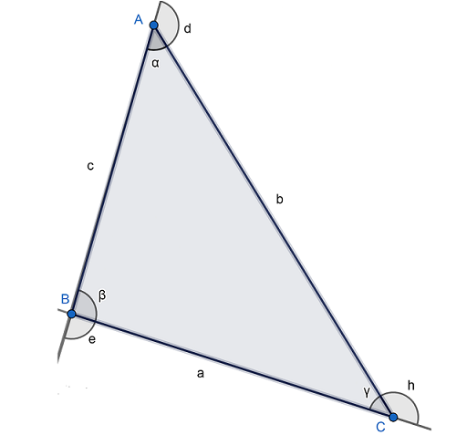
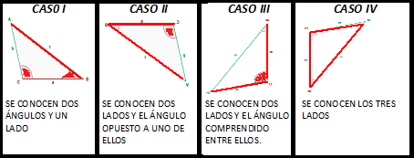

Triángulo Oblicuángulo

Un triángulo oblicuángulo es aquel que no es recto ninguno de sus ángulos :
- Si tiene sus tres ángulos agudos se denomina triángulo oblicuángulo acutángulo
- Si tiene un ángulo obtuso se llama obtusángulo.
El triángulo oblicuángulo se resuelve por las leyes de senos y de cosenos, así como el que la suma de todos los ángulos internos de un triángulo suman 180 grados.
$$\LARGE A + B + C = 180°$$
Los triángulos oblicuángulos presentan cuatro casos posibles:
